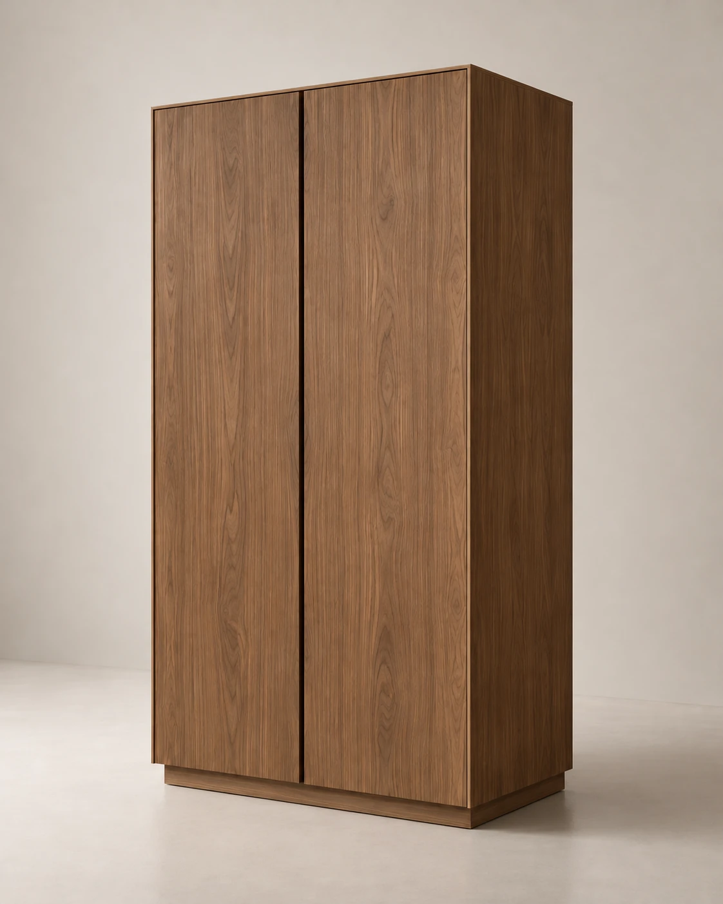
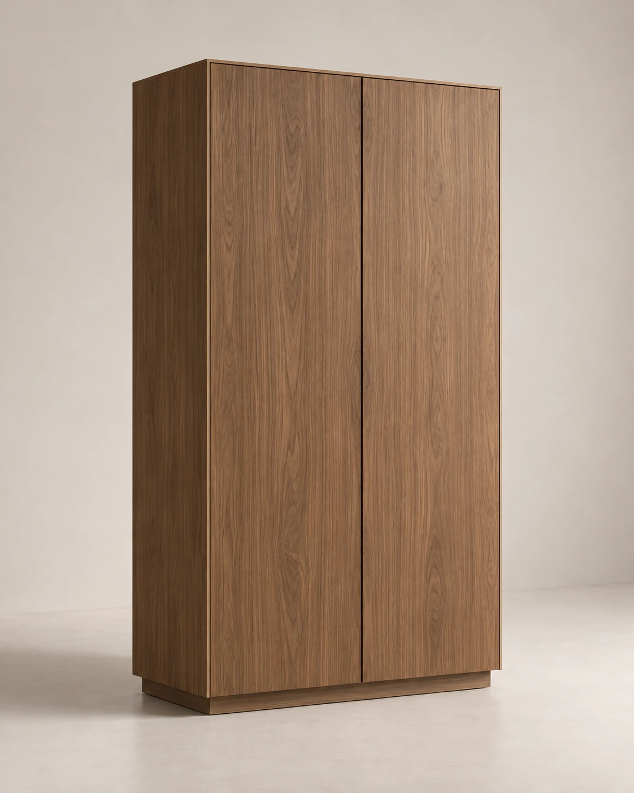

Мебель для современного дома
MODUL. / DEMO COLLECTIONМебель, которая
становится частью
пространства.
Создаём спокойные и функциональные предметы для интерьера — с вниманием к пропорциям, материалам и тому, как мебель живёт в пространстве.

Пространство начинается с пропорций.01 / MODUL.
01 / Категории
Предметы для разных
сценариев дома.


02 / Избранные модели
Форма, функция,
материал.
Четыре предмета —
единый взгляд на пространство.

LINEA 01
КомодНизкий вытянутый комод с лаконичным фасадом и спокойными пропорциями.

TERRA 02
ШкафВысокий архитектурный шкаф с минималистичными фасадами.

FRAME 03
СтеллажОткрытый графичный стеллаж с выраженной вертикальной структурой.

NODO 04
ТумбаКомпактная прикроватная или интерьерная тумба с простой геометрией.
03 / О MODUL.
Хорошая мебель
не требует к себе
постоянного внимания.
Она работает каждый день, поддерживает пространство и со временем становится естественной частью дома.
MODUL. рассматривает мебель как часть архитектуры интерьера. В основе — ясная конструкция, спокойные пропорции и материалы, которые легко сочетать с окружающим пространством.

Не заполнять пространство.
Организовывать его.
Представленные отделки служат визуальными ориентирами демонстрационной коллекции. Фактические характеристики и доступность материалов не заявляются.

Светлый дуб

Тёплый орех

Мягкий greige

Глубокий графит
05 / Подход
От пропорции
до готового предмета.

Конструкция
Каждый предмет начинается с понятной функции и логичной конструкции.
Материал
Фактуры и оттенки подбираются так, чтобы мебель легко становилась частью интерьера.
Детали
Визуальный шум убирается, а внимание остаётся на пропорциях, стыках и ежедневном использовании.
Ваше пространство / MODUL.
Найдите предмет
для своего пространства.
Каталог MODUL. объединяет мебель для хранения, работы и повседневных сценариев дома.
Перейти в каталог ↗